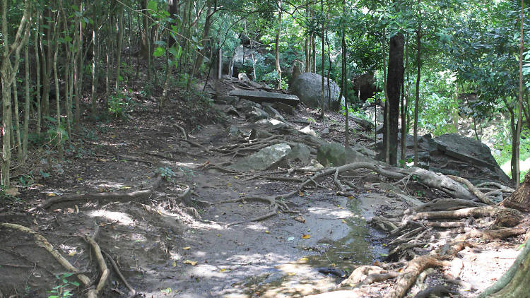
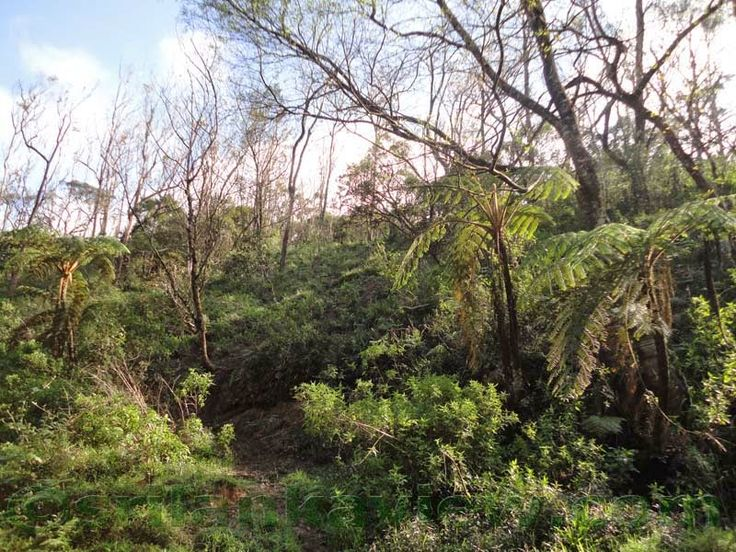
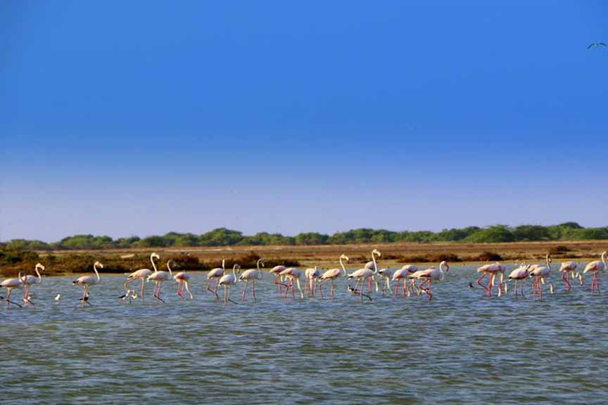

Areas Protected by the Department
- 
Strict Natural Reserves
- 
National Parks
- 
Nature Reserves

Jungle Corridors

Marine National Park

Sanctuary or Managed Elephant Reserves
The Department of Wildlife Conservation in Sri Lanka is a pivotal institution dedicated to the preservation and sustainable management of the island's rich biodiversity. Established in 1949, the department plays a crucial role in safeguarding the diverse ecosystems, habitats, and wildlife species that inhabit the country's national parks, sanctuaries, and forest reserves. Sri Lanka boasts a remarkable array of flora and fauna, including endangered species such as elephants, leopards, and various endemic birds. The Department of Wildlife Conservation is committed to ensuring the survival and well-being of these species through habitat protection, anti-poaching efforts, and community engagement initiatives.
The organization also spearheads conservation research, wildlife monitoring, and the implementation of policies aimed at balancing ecological integrity with sustainable human development. Through education and awareness programs, the department strives to foster a sense of responsibility and appreciation for the nation's natural heritage among the public. As the guardian of Sri Lanka's wildlife, the Department of Wildlife Conservation stands as a symbol of the nation's commitment to biodiversity conservation, ecological balance, and the harmonious coexistence of humans and nature.
Strict Natural Reserves
National Parks
Nature Reserves
Jungle Corridors
Marine National Park
Sanctuary or Managed Elephant Reserves